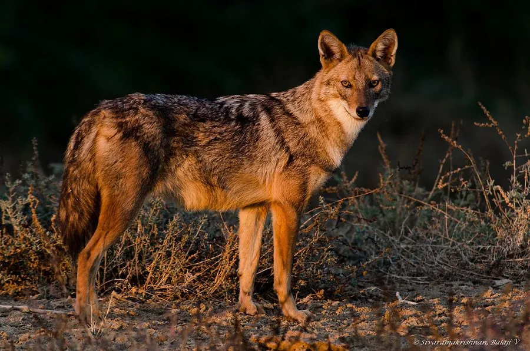

哺乳动物 · 动物界
金豺 Canis aureus

分布于非洲、中东和南亚的犬科动物，毛色金黄、体形介于狼和狐之间，食性广泛，常成对活动并发出合唱般的嚎叫。
- 分类
- 门脊索动物门纲哺乳纲目食肉目科犬科属犬属
- 栖息环境
- 稀树草原、灌丛、荒漠边缘与农田附近
- 地理分布
- 非洲北部和东部、中东、南亚及东南亚部分地区
- 保护级别
- IUCN 无危（LC）
物种志
金豺体长 0.7–1.05 米，尾长 0.2–0.3 米，体重 7–15 kg，体形比狼小而比赤狐大。它的被毛为金黄色至沙褐色，背部毛色较深，喉部和腹部偏白，尾端黑色；耳朵直立，吻部较尖，四肢细长。
金豺分布于非洲北部和东部、中东、南亚和东南亚部分地区，栖息于稀树草原、灌丛、荒漠边缘和农田附近，适应力很强。它是机会主义杂食动物，食物包括鼠类、野兔、鸟类、爬行动物、昆虫、果实和腐肉，也常翻找人类垃圾。金豺多成对或结成小家庭群活动，夜间和晨昏活跃，常发出由多只个体组成的合唱式嚎叫。雌性妊娠期约 63 天，每胎 2–6 仔。金豺种群总体稳定，被列为无危。
形态与习性
- 食性鼠类、野兔、鸟类、爬行动物、昆虫、果实与腐肉
- 体长0.7–1.05 m，尾长 0.2–0.3 m
- 体重7–15 kg
- 寿命野外约 8–10 年
- 繁殖妊娠期约 63 天，每胎 2–6 仔
- 社会结构多成对或结成小家庭群
- 声音常发出多只个体组成的合唱式嚎叫
趣味知识
- 金豺的毛色金黄，因此得名，体形介于狼和赤狐之间。
- 它们常在夜间合唱式嚎叫，多只个体的声音交织在一起。
- 金豺食性很杂，从鼠类、昆虫到果实和垃圾都吃。
- 金豺适应力强，分布在非洲、中东到南亚的广大地区。